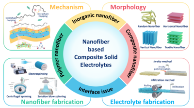
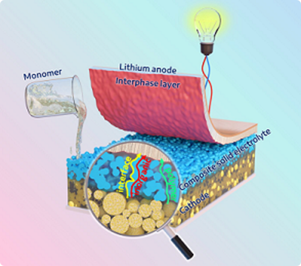
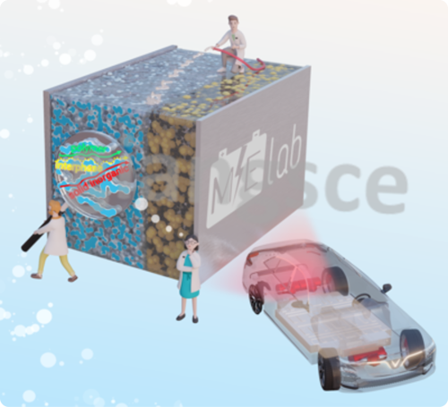
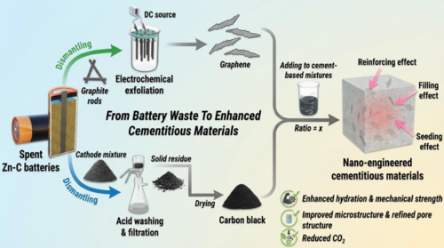
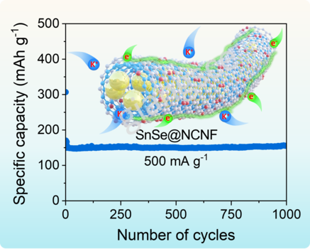
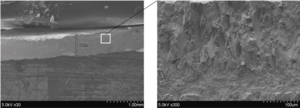
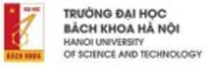

Cell Reports Physical Science · 2026
Durable GeP5-carbon anodes for sodium-ion batteries through elastomeric layer stabilizationAdvanced Energy Storage Lab · VinUniversity
We design electrode materials, solid-state electrolytes and circular recycling strategies for safer, cheaper and more sustainable electrochemical energy storage.
AES Lab, within the Center for Environmental Intelligence at VinUniversity, conducts research and technology development in electrochemical energy storage, advanced battery materials, battery recycling, and sustainable energy technologies — supporting renewable integration, electric mobility and the circular economy.
Design of high-performance anode and cathode materials for rechargeable batteries
Development of advanced sodium-, potassium-, sulfur-, and emerging battery technologies for high-energy and high-power applications.
Development of solid, polymer, and composite electrolytes for safer and high-performance batteries, including in situ polymerized and ceramic-framework composite solid electrolytes.
Development of recycling, regeneration, and upcycling strategies for sustainable and circular battery technologies
Cell Reports Physical Science · 2026
Durable GeP5-carbon anodes for sodium-ion batteries through elastomeric layer stabilization
Advanced Fiber Materials · 2025
Nanofiber-based Composite Solid Electrolytes for Solid-State Batteries: from Fundamentals to Applications
Nano-Micro Letters · 2024
Construction of a High-Performance Composite Solid Electrolyte through In-Situ Polymerization within a Self-Supported Porous Garnet Framework
Advanced Science · 2023
In-situ Polymerization on a 3D Ceramic Framework of Composite Solid Electrolytes for Room-Temperature Solid-State Batteries
Resources · 2026
Recycling carbon nanomaterials from spent battery waste for enhanced cementitious composites
Chemical Engineering Journal · 2025
Improving the Potassium Storage Capability of GeP5 Anode Material for Sustainable Potassium-ion Batteries
Carbon · 2024
Confining SnSe Particles in Nitrogen-Doped Carbon Nanofibers: A Free-Standing, Binder-Free Anode for Potassium-Ion Batteries
Journal of Materials Research and Technology · 2026
Gelatin-assisted electrodeposition of ultra-thick antimony telluride films with enhanced structural density and thermoelectric performanceWe are building an interdisciplinary team of engineers and scientists. We welcome motivated undergraduate students, research assistants and postdoctoral researchers from materials science, chemical engineering, chemistry, electrochemistry and related fields.

Prof. Le Thi Thu HangHanoi University of Science and Technology, Vietnam Prof. Akilu Yunusa-KaltungoThe University of Manchester, UKProf. Clara CheungThe University of Manchester, UK
Prof. Akilu Yunusa-KaltungoThe University of Manchester, UKProf. Clara CheungThe University of Manchester, UK Prof. Patrick ManuUWE Bristol, UKProf. Xiaoen WangDalian Institute of Chemical Physics, CAS, ChinaDr. Bui Ngoc KienThe University of Tokyo, Japan
Prof. Patrick ManuUWE Bristol, UKProf. Xiaoen WangDalian Institute of Chemical Physics, CAS, ChinaDr. Bui Ngoc KienThe University of Tokyo, JapanCenter for Environmental Intelligence, VinUniversity
2nd Floor, Building D, Vinhomes Ocean Park, Hanoi 100000, Vietnam (Google Maps)